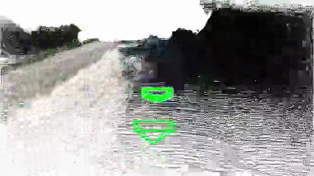

Scal3R: Learning Efficient Multi-Relative Pose Query for Scalable Online 3D Reconstruction
Scalable online 3D reconstruction from long videos using multi-reference relative pose queries and online pose-graph optimization, with only about 1% additional parameters on a frozen backbone.